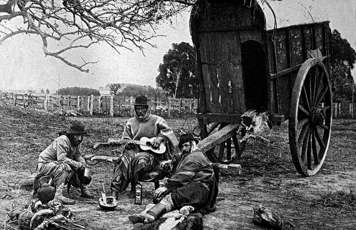
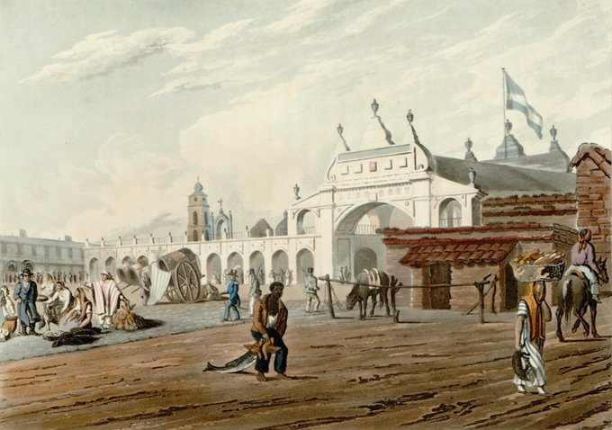

Recursos didácticos
Mapas, pinturas e imágenes fotográficas

El uso de mapas
La cartografía expresa la historia en el espacio.

El uso de imágenes
Utilizar imágenes en el aula implica distinguir entre ver, mirar y observar.
La vida cotidiana
Una excelente puerta de entrada para pensar las ciencias sociales en toda su complejidad.

La pintura
Los artistas viajeros expresaron en sus pinturas la vida cotidiana de una época.
El uso de diversos recursos didácticos